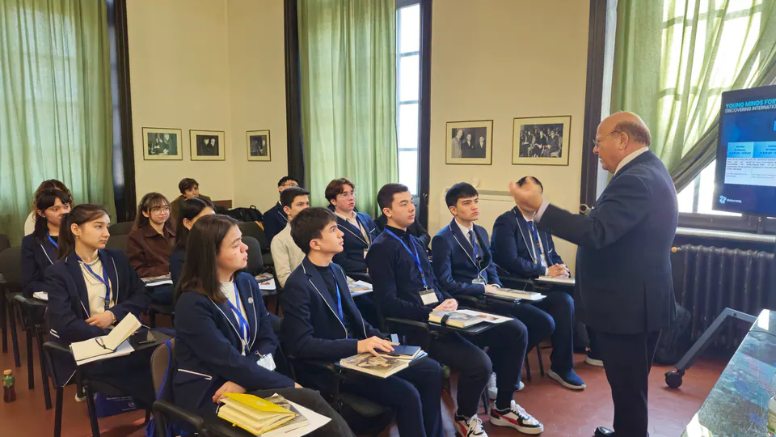
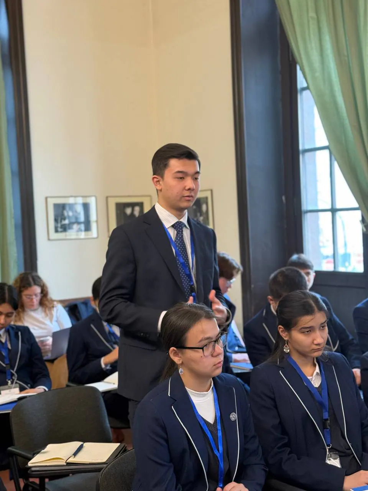
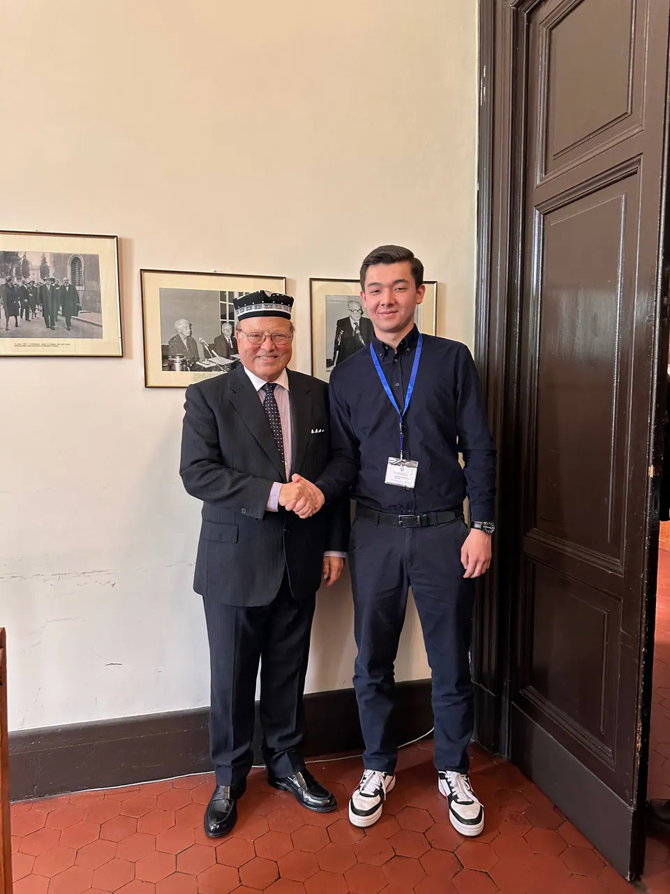
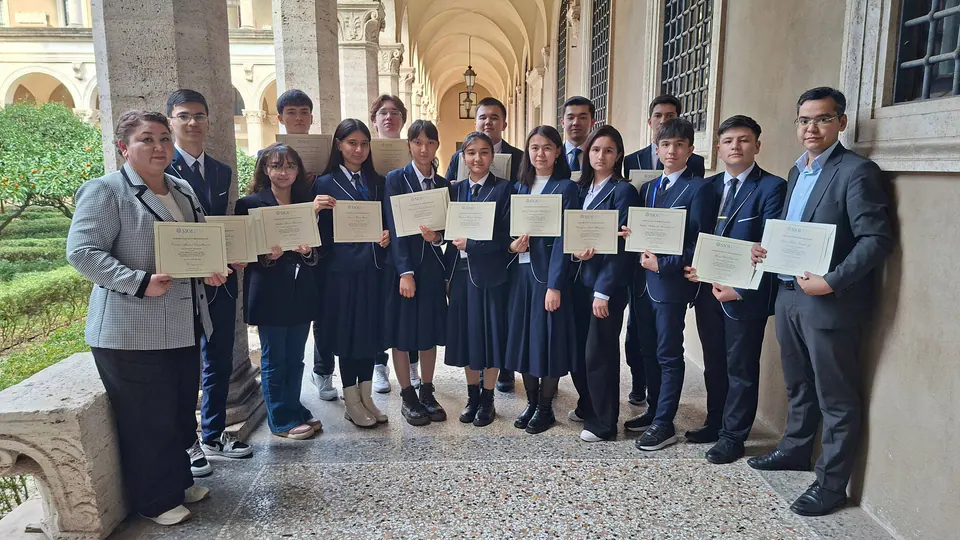
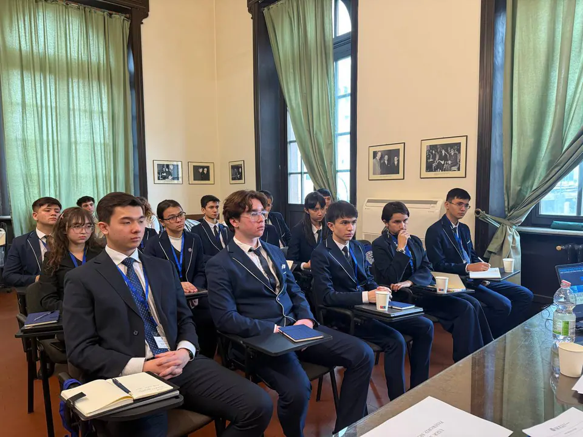
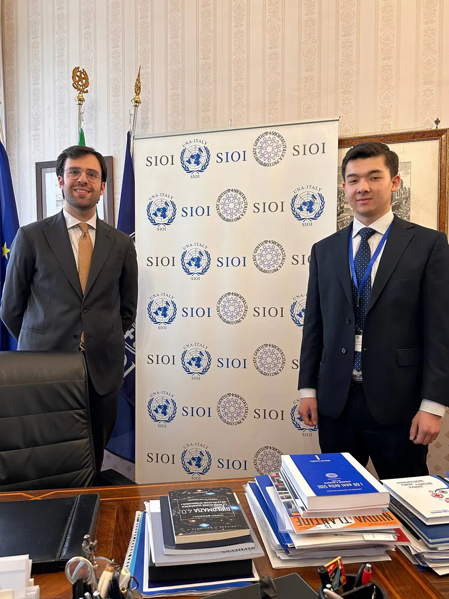
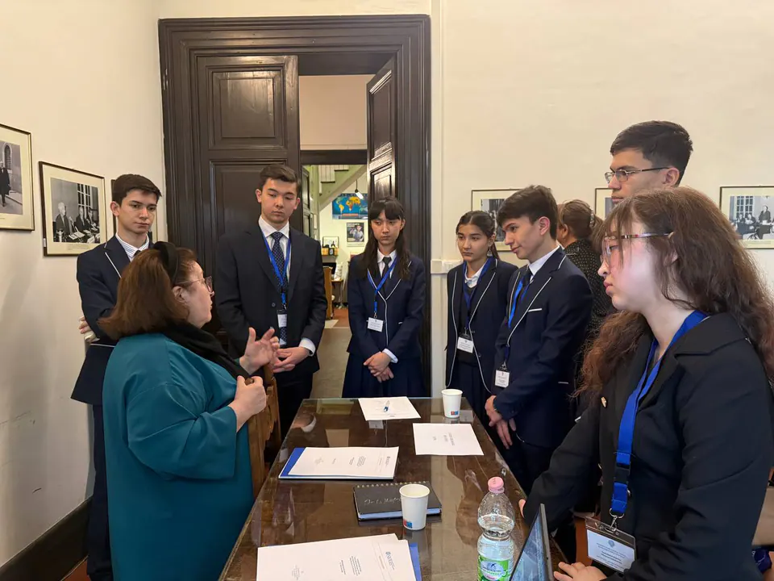
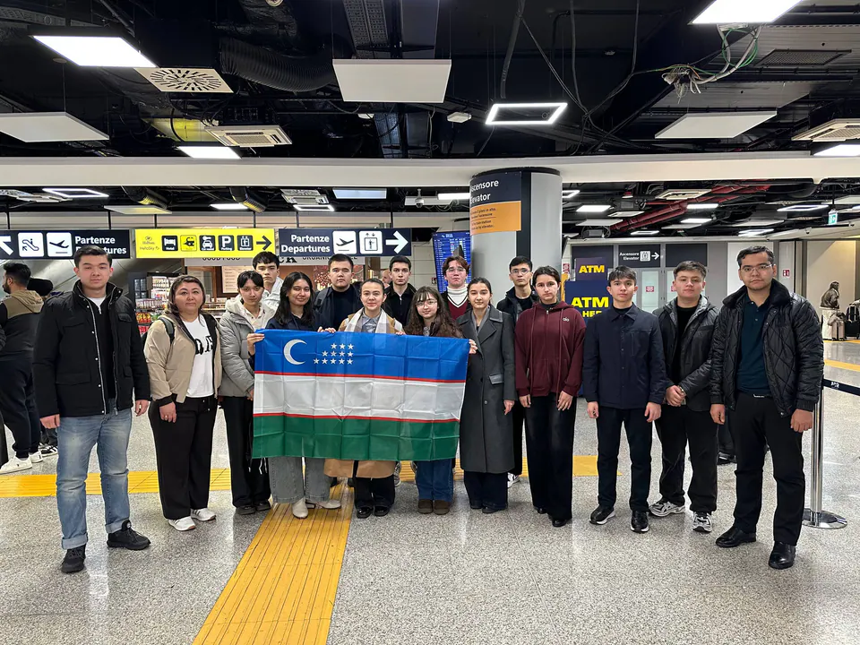

SIOI in Rome
“Young Minds for Global Futures: Discovering International Relations from Diplomacy to Technology”
- Role
- SIOI Ambassador to Uzbekistan
- Organization
- SIOI (Società Italiana per l’Organizzazione Internazionale) / UNA Italy
- Dates
- 19–23 Jan 2026


Summary
- Role
- Participant, 19–23 Jan 2026; one of 14 SIOI ambassadors to Uzbekistan
- Course
- “Young Minds for Global Futures: Discovering International Relations from Diplomacy to Technology”, Italian Society for International Organization (SIOI)
- What I did
- Attended lectures by Ambassador Maria Assunta Accili, Prof. Claudia Vittori, Dr. Giulio Pecora, Prof. Emilio Iodice and Ambassador Maurizio Melani.
- Agreed with SIOI to bring the course to Jizzakh.
- What I learned
- Prof. Iodice told us that nobody knows how diplomacy works. So when I built NextGen, I built most workshops around a simulation, where students learn it by doing it.
In January 2026, I completed a five-day course on international relations at SIOI (United Nations Association of Italy) in Rome and became one of 14 SIOI ambassadors to Uzbekistan. We learned from ambassadors, professors, and journalists, and I left Rome with a plan: NextGen Diplomats.
The story
The government paid for my place, one of 14 for students from Uzbekistan’s Presidential Schools. I planned before I flew: I wanted to bring the course home. We studied how state relations change, the future of the international financial system, misinformation, and how AI, cybersecurity and space policy change international relations. Before the week ended, SIOI agreed to help us run the program in Jizzakh. Rome was expensive, so my friends and I hunted for cheap food. We found a pizzeria that was cheaper than home, and it came with a free Coke.
19–23 January 2026 · Rome, Italy
Young Minds for Global Futures
I completed the introductory course of SIOI (Società Italiana per l’Organizzazione Internazionale), “Young Minds for Global Futures: Discovering International Relations from Diplomacy to Technology”, in Rome and became one of the 14 SIOI ambassadors to Uzbekistan. During the five-day course, high-level diplomats and professors introduced us to international relations. The lectures were:
- 01Where are we coming from and where are we going? Understanding the global transformation and the evolution of State relationshipsby Ambassador Maria Assunta Accili, SIOI Board Member
- 02The international financial architecture and its future. From Bretton Woods to the UN Agenda 2030: G7 vs BRICS and the emergence of a new (dis)orderby Professor Claudia Vittori, Professor of Economic Policy, University of Roma Tre
- 03Communication and information in Global Affairs. Distinguishing between genuine information and misinformation in the global contextby Dr. Giulio Pecora, Journalist, Editorial Director of the SIOI Series and SIOI Board Member
- 04Impact of Technological Innovation on International Relations: Artificial Intelligence, Cybersecurity, and Space Policiesby Prof. Emilio Iodice, Emeritus Director, Professor of Leadership, Loyola University Chicago, Diplomat and Advisor to U.S. Administrations
- 05The making of a New World Order: a comparative historical perspectiveby Ambassador Maurizio Melani, SIOI Board Member







I used the week to plan what would come next. Before I left Rome, SIOI and I agreed to bring the same experience to young people in Uzbekistan, which became NextGen Diplomats for Global Futures.
Gallery
More moments









